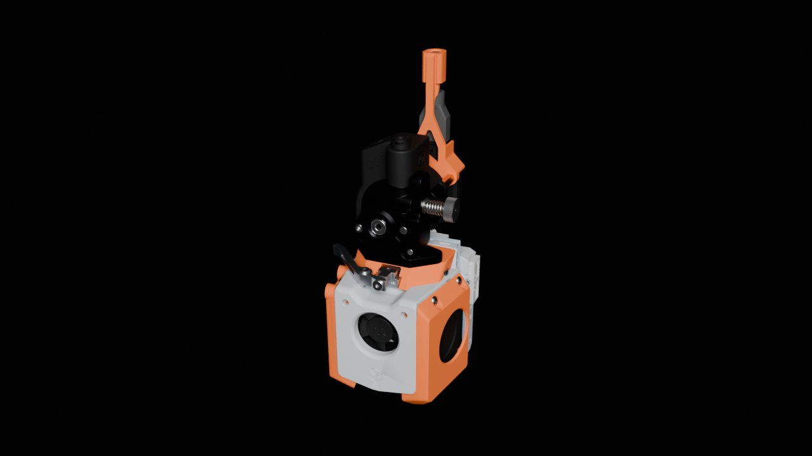

<!doctype html>
<html lang="en">
<meta charset="utf-8">
<meta name="viewport" content="width=device-width, initial-scale=1, viewport-fit=cover">
<title>VT350 Toolhead Viewer</title>
<link rel="preconnect" href="https://fonts.googleapis.com">
<link rel="stylesheet" href="https://fonts.googleapis.com/css2?family=IBM+Plex+Mono:wght@400;500&family=IBM+Plex+Sans:wght@400;500;600&display=swap">
<style>
body { margin: 0; } img { max-width: 100%; } [hidden] { display: none !important; }
/* Layout: a full-height stage for the model, with a thin instrument strip of facts above and a parts key below. */
:root {
  --bg: #eceef0; --stage: #dfe3e6; --fg: #1d2226; --muted: #5d676f; --line: #c4cbd1;
  --accent: #e2662a; --chip: #ffffffcc;
  --sans: "IBM Plex Sans", system-ui, -apple-system, "Segoe UI", sans-serif;
  --mono: "IBM Plex Mono", ui-monospace, "SFMono-Regular", Menlo, monospace;
}
@media (prefers-color-scheme: dark) { :root:not([data-theme="light"]) {
  --bg: #15191c; --stage: #1d2226; --fg: #e3e7ea; --muted: #8e99a2; --line: #333b42; --accent: #f07a40; --chip: #1d2226cc; color-scheme: dark } }
:root[data-theme="dark"] {
  --bg: #15191c; --stage: #1d2226; --fg: #e3e7ea; --muted: #8e99a2; --line: #333b42; --accent: #f07a40; --chip: #1d2226cc; color-scheme: dark }
html, body { height: 100%; }
body { background: var(--bg); color: var(--fg); font-family: var(--sans); display: flex; flex-direction: column;
  padding-left: max(16px, env(safe-area-inset-left, 0px)); padding-right: max(16px, env(safe-area-inset-right, 0px)); padding-block: 12px; gap: 10px; box-sizing: border-box; }
header { display: flex; flex-wrap: wrap; align-items: baseline; gap: 6px 18px; }
h1 { font-size: 1.15rem; font-weight: 600; margin: 0; text-wrap: balance; }
h1 span { color: var(--accent); }
.facts { display: flex; flex-wrap: wrap; gap: 4px 16px; font-family: var(--mono); font-size: 0.78rem; color: var(--muted); font-variant-numeric: tabular-nums; }
.facts b { color: var(--fg); font-weight: 500; }
main { flex: 1; display: grid; grid-template-columns: minmax(0, 3fr) minmax(0, 2fr); grid-template-rows: minmax(320px, 1fr); gap: 10px; min-height: 0; }
@media (max-width: 860px) { main { grid-template-columns: minmax(0, 1fr); grid-template-rows: minmax(360px, 1fr) auto; } }
figure { margin: 0; display: flex; flex-direction: column; gap: 6px; min-width: 0; }
figure img { width: 100%; aspect-ratio: 16 / 9; object-fit: cover; border: 1px solid var(--line); border-radius: 6px; background: #121316; }
figcaption { font-size: 0.78rem; color: var(--muted); line-height: 1.45; }
figcaption b { color: var(--fg); font-weight: 500; }
#stage { position: relative; min-height: 320px; border: 1px solid var(--line); border-radius: 6px; background: var(--stage); overflow: hidden; }
#stage canvas { display: block; width: 100%; height: 100%; touch-action: none; }
#status { position: absolute; inset: 0; display: grid; place-items: center; font-family: var(--mono); font-size: 0.85rem; color: var(--muted); pointer-events: none; text-align: center; padding: 16px; }
.tools { position: absolute; top: 10px; right: 10px; display: flex; gap: 6px; }
button { font: 500 0.78rem var(--sans); color: var(--fg); background: var(--chip); border: 1px solid var(--line); border-radius: 4px; padding: 5px 10px; cursor: pointer; }
button:hover { border-color: var(--accent); }
button:focus-visible { outline: 2px solid var(--accent); outline-offset: 2px; }
.hint { position: absolute; left: 10px; bottom: 8px; font-family: var(--mono); font-size: 0.72rem; color: var(--muted); }
footer { font-size: 0.78rem; color: var(--muted); line-height: 1.5; max-width: 75ch; }
footer a { color: inherit; }
</style>

<header>
  <h1 id="t-title">…</h1>
  <div class="facts">
    <span>model <b id="t-model">…</b></span>
    <span>GLB <b id="f-size">…</b></span>
    <span>loaded in <b id="f-time">…</b></span>
    <span><b id="f-tris">…</b> triangles</span>
  </div>
</header>

<main>
<div id="stage">
  <div id="status">Loading the model…</div>
  <div class="tools">
    <button id="b-match" type="button">Match render camera</button>
    <button id="b-reset" type="button">Reset view</button>
    <button id="b-spin" type="button" aria-pressed="false">Turntable</button>
  </div>
  <div class="hint">drag: turn · right-drag / two fingers: pan · wheel / pinch: zoom</div>
</div>
<figure>
  
  <figcaption><b>The render, for comparison.</b> <span id="t-caption"></span> <b>Match render camera</b> puts the live view at this camera. The live view has no ray-traced shadows or reflections, so expect the same colours with flatter lighting.</figcaption>
</figure>
</main>

<footer><span id="t-about"></span> <span id="t-credits"></span><br><span id="t-links"></span></footer>

<script src="https://cdn.jsdelivr.net/npm/three@0.147.0/build/three.min.js"></script>
<script src="https://cdn.jsdelivr.net/npm/three@0.147.0/examples/js/controls/OrbitControls.js"></script>
<script src="https://cdn.jsdelivr.net/npm/three@0.147.0/examples/js/loaders/GLTFLoader.js"></script>
<script src="https://cdn.jsdelivr.net/npm/three@0.147.0/examples/js/environments/RoomEnvironment.js"></script>
<script>
// toolhead-viewer/viewer.json: {"title", "title_accent", "model", "glb" (a .glb, or a .gltf.json with its buffer embedded, for
// hosts that don't serve .glb), "cam": {"pos", "look", "lens_mm"} (frame_view.py's "compare" view, model mm),
// "compare_alt", "caption", "about", "credits", "links": [{"href", "text"}]}. Template: platform/viewer/viewer_page.py.
const t0 = performance.now();
fetch("toolhead-viewer/viewer.json").then(r => { if (!r.ok) throw new Error("viewer.json " + r.status); return r.json(); })
  .then(start).catch(e => { document.getElementById("status").textContent = "Couldn't load the viewer settings (" + String(e.message).slice(0, 120) + ")."; });
function start(cfg) {
  const t = document.getElementById("t-title"); t.textContent = cfg.title + " ";
  const sp = document.createElement("span"); sp.textContent = cfg.title_accent || ""; t.appendChild(sp);
  document.getElementById("t-model").textContent = cfg.model;
  document.getElementById("t-compare").alt = cfg.compare_alt || "";
  document.getElementById("t-caption").textContent = cfg.caption || "";
  document.getElementById("t-about").textContent = cfg.about || "";
  document.getElementById("t-credits").textContent = cfg.credits || "";
  const ln = document.getElementById("t-links");
  (cfg.links || []).forEach((l, k) => { if (k) ln.append(" · "); const a = document.createElement("a"); a.href = l.href; a.textContent = l.text; ln.appendChild(a); });
  const RENDER_CAM = cfg.cam;
  let match = null;
  const stage = document.getElementById("stage"), status = document.getElementById("status");
  const fmtMB = n => (n / 1048576).toFixed(2) + " MB";
  if (!window.THREE || !THREE.GLTFLoader || !THREE.OrbitControls) { status.textContent = "Couldn't load the 3D library. Reload the page to try again."; return; }
  const renderer = new THREE.WebGLRenderer({ antialias: true, alpha: true });
  renderer.setPixelRatio(Math.min(window.devicePixelRatio, 2));
  renderer.outputEncoding = THREE.sRGBEncoding;
  renderer.toneMapping = THREE.ACESFilmicToneMapping; renderer.toneMappingExposure = 1.0;
  renderer.physicallyCorrectLights = true;
  stage.prepend(renderer.domElement);
  const scene = new THREE.Scene();
  if (THREE.RoomEnvironment) {
    const pm = new THREE.PMREMGenerator(renderer);
    scene.environment = pm.fromScene(new THREE.RoomEnvironment(), 0.04).texture;
  }
  scene.add(new THREE.HemisphereLight(0xffffff, 0x445566, 0.6));
  const key = new THREE.DirectionalLight(0xffffff, 1.6); key.position.set(1, 2, 1.5); scene.add(key);
  const camera = new THREE.PerspectiveCamera(35, 1, 0.001, 10);
  const controls = new THREE.OrbitControls(camera, renderer.domElement);
  controls.enableDamping = true; controls.dampingFactor = 0.08;
  let home = null;
  function resize() {
    const w = stage.clientWidth, h = stage.clientHeight;
    renderer.setSize(w, h, false); camera.aspect = w / h; camera.updateProjectionMatrix();
  }
  new ResizeObserver(resize).observe(stage); resize();

  fetch("toolhead-viewer/" + cfg.glb).then(r => {
    if (!r.ok) throw new Error("GLB " + r.status);
    return r.arrayBuffer();
  }).then(raw => {
    document.getElementById("f-size").textContent = fmtMB(raw.byteLength);
    const buf = isGlb(raw) ? raw : glbFromEmbedded(new TextDecoder().decode(raw));
    new THREE.GLTFLoader().parse(buf, "", gltf => {
      const root = gltf.scene;
      const box = new THREE.Box3().setFromObject(root), c = box.getCenter(new THREE.Vector3()), s = box.getSize(new THREE.Vector3());
      root.position.sub(c); scene.add(root);
      // the render's camera (frame_view.py, model mm, Z up) -> glTF (m, Y up: x, z, -y), less the centring offset
      const toG = p => new THREE.Vector3(p[0] / 1000, p[2] / 1000, -p[1] / 1000).sub(c);
      match = { pos: toG(RENDER_CAM.pos), target: toG(RENDER_CAM.look),
                vfov: 2 * Math.atan(Math.tan(Math.atan(18 / RENDER_CAM.lens_mm)) / (16 / 9)) * 180 / Math.PI };
      let tris = 0;
      root.traverse(o => { if (o.isMesh) { const g = o.geometry; tris += (g.index ? g.index.count : g.attributes.position.count) / 3; } });
      document.getElementById("f-tris").textContent = Math.round(tris).toLocaleString("en-US");
      const r = s.length() / 2;
      // a 3/4 front view: the model's front is -Y in FreeCAD, which glTF's Y-up makes +Z
      home = { pos: new THREE.Vector3(r * 1.6, r * 0.9, r * 2.6), target: new THREE.Vector3(0, 0, 0) };
      camera.near = r / 100; camera.far = r * 50; camera.updateProjectionMatrix();
      controls.minDistance = r * 0.3; controls.maxDistance = r * 10;
      reset();
      status.hidden = true;
      requestAnimationFrame(() => { document.getElementById("f-time").textContent = ((performance.now() - t0) / 1000).toFixed(2) + " s"; });
    }, e => { status.textContent = "Couldn't read the model: " + String(e && e.message || e).slice(0, 200); });
  }).catch(e => { status.textContent = "Couldn't load the model (" + String(e && e.message || e).slice(0, 200) + "). Reload the page to try again."; });

  function reset() { if (!home) return; camera.fov = 35; camera.updateProjectionMatrix(); camera.position.copy(home.pos); controls.target.copy(home.target); controls.update(); }
  document.getElementById("b-reset").addEventListener("click", reset);
  document.getElementById("b-match").addEventListener("click", () => {
    if (!match) return;
    controls.autoRotate = false; spin.setAttribute("aria-pressed", "false");
    camera.fov = match.vfov; camera.updateProjectionMatrix();
    camera.position.copy(match.pos); controls.target.copy(match.target); controls.update();
  });
  const spin = document.getElementById("b-spin");
  const reduce = window.matchMedia("(prefers-reduced-motion: reduce)").matches;
  spin.addEventListener("click", () => {
    controls.autoRotate = !controls.autoRotate; controls.autoRotateSpeed = reduce ? 0.8 : 2.0;
    spin.setAttribute("aria-pressed", String(controls.autoRotate));
  });
  (function loop() { requestAnimationFrame(loop); controls.update(); renderer.render(scene, camera); })();
}
function isGlb(b) { return b.byteLength >= 4 && new DataView(b).getUint32(0, true) === 0x46546C67; }
// A glTF JSON with its buffer as a data: URI -> a GLB in memory (a sandbox that blocks fetch() of data: URIs can't
// load the JSON form directly).
function glbFromEmbedded(text) {
  const doc = JSON.parse(text), b64 = doc.buffers[0].uri.slice(doc.buffers[0].uri.indexOf(",") + 1);
  delete doc.buffers[0].uri;
  const raw = atob(b64), bin = new Uint8Array((raw.length + 3) & ~3);
  for (let i = 0; i < raw.length; i++) bin[i] = raw.charCodeAt(i);
  const js = new TextEncoder().encode(JSON.stringify(doc));
  const jpad = (js.length + 3) & ~3, glb = new Uint8Array(12 + 8 + jpad + 8 + bin.length), dv = new DataView(glb.buffer);
  dv.setUint32(0, 0x46546C67, true); dv.setUint32(4, 2, true); dv.setUint32(8, glb.length, true);
  dv.setUint32(12, jpad, true); dv.setUint32(16, 0x4E4F534A, true);
  glb.fill(0x20, 20, 20 + jpad); glb.set(js, 20);
  dv.setUint32(20 + jpad, bin.length, true); dv.setUint32(24 + jpad, 0x004E4942, true); glb.set(bin, 28 + jpad);
  return glb.buffer;
}
</script>
